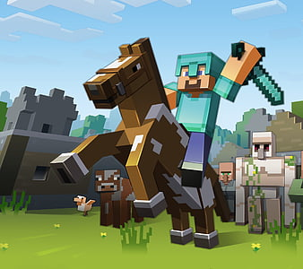
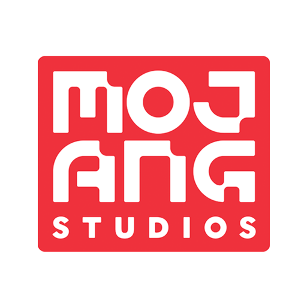
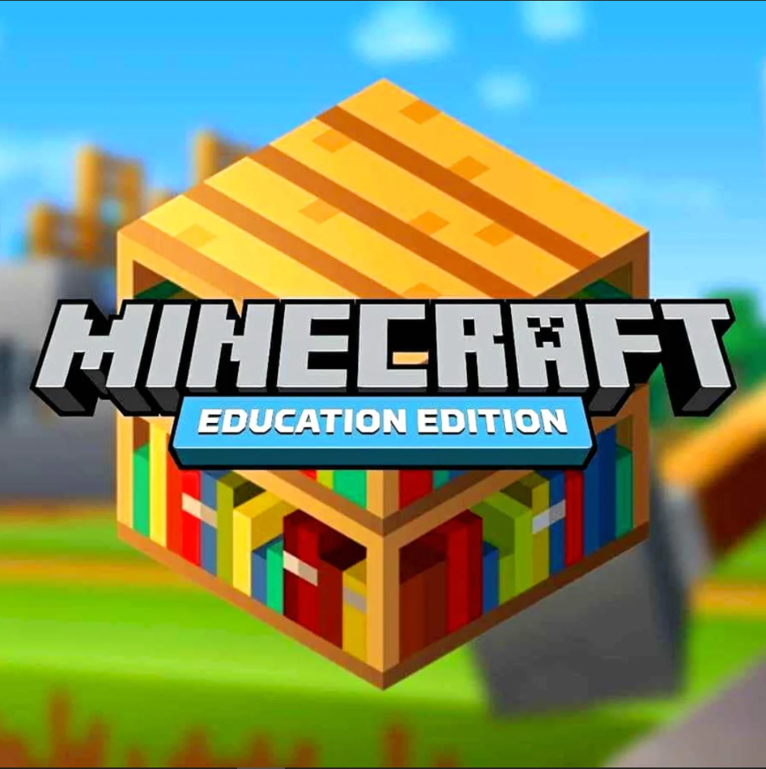

Bem-vindo ao Craftland, e explore algumas curiosidades sobre Minecraft!
Sobre mim
Minha ligação com esse tema é o fato de desde criança eu sempre jogar o Minecraft, tornando meu jogo
favorito e meu jogo mais jogado da vida, por ele ser um jogo que mudou minha vida eu optei em falar
sobre ele. Sempre gostei muito de jogar com meus amigos Minecraft, onde ali aprendi muitas coisas sobre
sobrevivência e até mesmo o companheirismo, por conta de estar em um mundo onde estávamos trabalhando
todos em equipe. Me ensinou a trabalhar em equipe, a saber lidar com desafios e até mesmo me ajudou na
escola através do Minecraft Education por conta de suas aulas educacionais de química que eu
tinha.

Sobre Minecraft
Minecraft é um videogame sandbox de sobrevivência criado pelo desenvolvedor sueco Markus "Notch"
Persson, posteriormente desenvolvido e publicado pela Mojang Studios, cujos direitos de propriedade
intelectual são adquirida pela Microsoft em 2014. Originalmente lançado como um trabalho em andamento
em maio de 2009,
Sua versão completa foi lançada em novembro de 2011 para Microsoft Windows, macOS, Linux e muito
mais dispositivos móveis e posteriormente relançado para diversas plataformas. Também há jogos
O dispositivo eletrônico mais vendido de todos os tempos, com mais de 300 milhões de cópias vendidas
em
todo o mundo. Até outubro de 2023, a plataforma terá mais de 140 milhões de jogadores ativos mensais.
No Minecraft, os jogadores exploram deliberadamente um mundo aberto tridimensional em blocos,
Geração pixelizada e processual, capaz de descobrir e extrair matérias-primas, ferramentas
Crie, construa estruturas ou terraplenagens e, dependendo do modo de jogo, possa lutar
Inimigos controlados por computador e cooperar ou competir com outros jogadores no mesmo ambiente
mundo. Esses modos incluem o modo de sobrevivência, no qual os jogadores precisam obter recursos
para
Construa o mundo e sobreviva, e um modo criativo onde os jogadores têm recursos ilimitados. existir
Versão Java, os jogadores podem usar módulos para modificar a jogabilidade e criar novos mecanismos
de
itens,textura etc.
Minecraft foi aclamado pela crítica, ganhou vários prêmios e é considerado um dos melhores e mais
sofisticados jogos já criados.
O videogame mais influente de todos os tempos. redes sociais, imitação, adaptação,
Os produtos da MineCon e a convenção anual desempenharam um papel fundamental na popularidade do jogo.
retornar tem sido usado em ambientes educacionais, particularmente na área de sistemas de computador,
por ex.
Computadores virtuais e dispositivos de hardware são construídos nele. Existem também vários trabalhos
desenvolvido como Minecraft: Story Mode (2015), Minecraft Earth (2019), Minecraft Dungeons
(2020) e Lendas do Minecraft (2023).
Sobre Mojang
A Mojang Studios (também conhecida como Mojang Stockholm) é uma filial da Xbox Game Studios, com base
em Estocolmo, Suécia, notável principalmente por sua criação e desenvolvimento do Minecraft. Foi
estabelecida por Markus Persson, Jakob Porser e Carl Manneh em 2009.
Markus Persson e Rolf Jansson deram início ao desenvolvimento de um MMORPG chamado Wurm Online em 2003,
utilizando o nome Mojang Specifications. Persson e Jansson registraram sua empresa como Mojang
Specifications AB em 2007. Mais tarde, Persson saiu e expressou o desejo de continuar usando o nome
"Mojang"; Jansson renomeou sua empresa para Onetoofree AB e depois para Code Club AB.
Durante as fases iniciais do desenvolvimento do Minecraft, Persson retomou o uso do nome Mojang
Specifications. Após recusar uma proposta de emprego na Valve, Notch oficializou as especificações da
Mojang como Mojang AB com Jakob Porsér. Persson então contratou Carl Manneh como CEO, já que ambos
estavam focados no desenvolvimento contínuo do Minecraft.
Em 2012, a Mojang colaborou com a Humble Bundle para lançar o Mojam, um evento de game jam para angariar
fundos para caridade. Como parte disso, a Mojang desenvolveu o mini-jogo de tiro Catacomb Snatch. Foram
vendidos 81.575 pacotes, arrecadando fundos significativos. No ano seguinte, a Mojang desenvolveu três
mini-jogos para o Mojam 2.
Em 15 de setembro de 2014, a Mojang anunciou publicamente sua aquisição pela Microsoft, tornando-se
posteriormente uma filial da Microsoft e ingressando na Xbox Game Studios (na época conhecida como
Microsoft Studios) em 6 de novembro de 2014.
Em 17 de maio de 2020 (no décimo primeiro aniversário do Minecraft), a Mojang anunciou uma mudança de
nome para Mojang Studios, introduzindo um novo logotipo e uma animação de logotipo.


Sobre Minecraft Education
O Minecraft Education é uma plataforma educacional baseada em jogos que promove o aprendizado criativo
e inclusivo através do jogo. Ao explorar mundos virtuais compostos por blocos, os alunos desbloqueiam
novas maneiras de abordar uma ampla variedade de assuntos e desafios. Desde leitura e matemática até
história e codificação, o Minecraft Education oferece aulas e currículos adaptados para diferentes tipos
de alunos.
Uma das características principais é a capacidade de explorar e criar em mundos abertos e criativos. Com
centenas de lições prontas para uso, desafios criativos e mundos em branco, os educadores têm uma ampla
gama de recursos para personalizar a experiência de aprendizado para seus alunos. O melhor é que não é
necessário ter experiência prévia em jogos para começar.
Além de transmitir conhecimento acadêmico, o Minecraft Education também visa desenvolver habilidades
essenciais para o sucesso futuro dos alunos, como resolução de problemas, colaboração, cidadania digital
e pensamento crítico. Ao despertar uma paixão pelo STEM (Ciência, Tecnologia, Engenharia e Matemática),
a plataforma incentiva os alunos a explorar áreas relacionadas à ciência e tecnologia de uma maneira
envolvente e interativa.
A ligação entre o Minecraft: Education Edition e a ONU pode ser estabelecida através de iniciativas
educacionais que abordam questões globais e promovem os Objetivos de Desenvolvimento Sustentável (ODS)
da ONU. Por exemplo, os educadores podem usar o Minecraft para criar experiências de aprendizagem
imersivas que abordam questões como acesso à água potável, energia limpa, igualdade de gênero, educação
de qualidade e muito mais, alinhando essas atividades com os ODS relevantes.